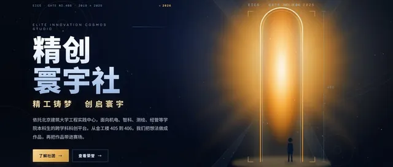
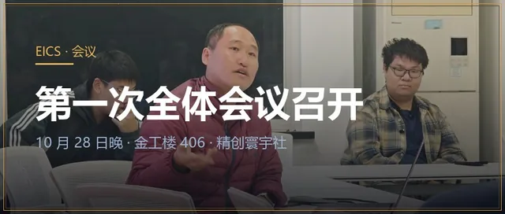
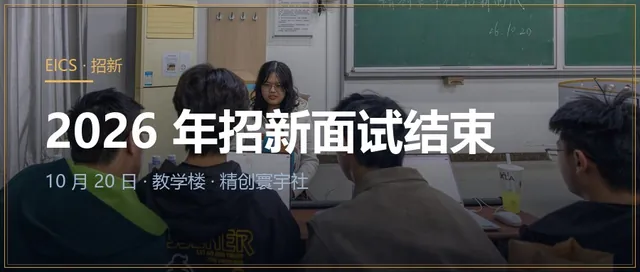
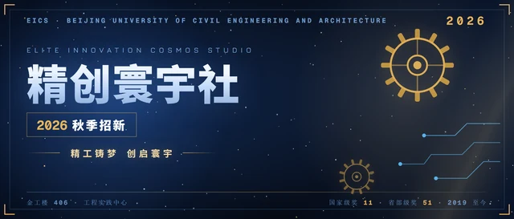
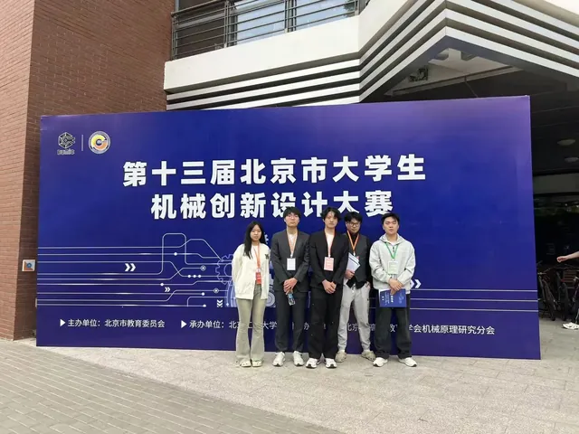
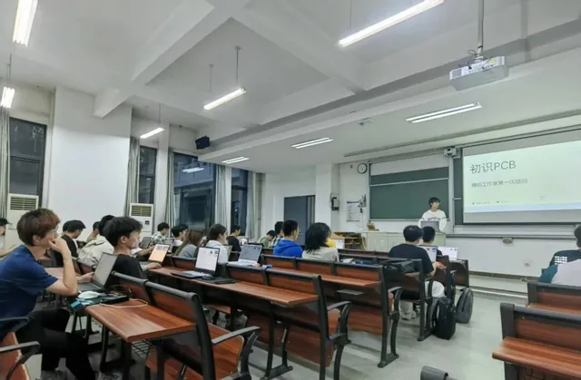
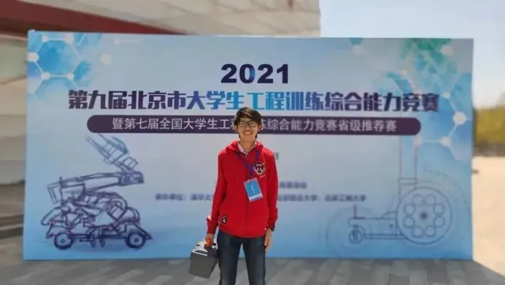

LOG 01精创寰宇社官方网站上线
精创寰宇社官方网站上线，网址 eics406.github.io。网站设六个页面，收录 2019 年至今的沿革、奖项与活动记录，数据逐项标注统计口径。
6 分钟阅读阅读记录 →
社团的动态记录都收在这份档案里。按时间翻，或者按类型筛。
共 8 条记录：4 条附公众号原文，1 条附相关链接。
8 条记录

LOG 01精创寰宇社官方网站上线，网址 eics406.github.io。网站设六个页面，收录 2019 年至今的沿革、奖项与活动记录，数据逐项标注统计口径。

LOG 0210 月 28 日晚，第一次全体会议在金工楼 406 召开：公布新一届学生管理层，重申「团队第一」，明确全年 15 项竞赛安排，逐条通过《社团管理制度》。

LOG 0310 月 20 日，2026 年秋季招新面试在教学楼举行并当日完成。重点考察学习意愿、未来规划与时间投入，计划招收约 20 人。
招新邀约：认识同样喜欢创造的人，把课堂知识用起来，经历一个作品从无到有的全过程。

公众号LOG 052026 秋季招新推文：讲清社团理念与学海引航、竞舟逐梦、匠心造物、智汇交流四个培养方向，零基础同学同样欢迎。

公众号LOG 06第十三届北京市大学生机械创新设计大赛，社团 5 支队伍全部获奖：1 项北京市一等奖晋级国赛、4 项北京市二等奖。

公众号LOG 0730 余名不同专业同学从原理图到 PCB 布局、敷铜操作全程动手，完成第一次 PCB 设计实践。

相关链接LOG 08北京建筑大学官微报道：刘昊翾学业与综测专业第一，获国家级奖项 3 项、省部级 11 项，推免至浙江大学；文中回顾了精创工作室的竞赛带教方式。
没有匹配的记录。
首页与风采页会同步最新动态；2026 秋季招新已结束，新一届安排以社团公众号通知为准。